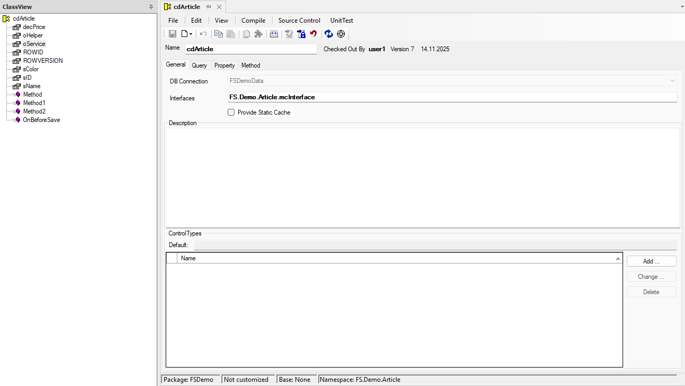

Components
Components stellen funktionale Klassen dar. Framework Studio unterscheidet zwischen vier verschiedenen Typen:
- Textcollections
- Components ohne Query
- Components mit Query (DataComponents)
- Collections
In diesem Abschnitt wird auf Components mit Query und Collections eingegangen. Informationen zu Textcollections und Components ohne Query finden Sie in den folgenden Abschnitten.
Eine spezielle Sorte von Components stellen in Framework Studio die Data-Components dar. Data-Components werden über den Database-Editor erstellt (siehe Abschnitt Database Editor) und stellen die Verbindung zu den Daten in der Datenbank her. Jeder aus der Datenbank geladene Datensatz entspricht deshalb einem Objekt vom Typ der jeweiligen Component.
Zu einer Data-Component können Sie auch zusätzlich Properties definieren, die Sie über Get/Set-Methoden füllen oder setzen. Außerdem können auf einer Component Methoden hinterlegt werden, die mit den Daten operieren und sie validieren.
Eine Component besteht aus folgenden Bestandteilen:
Query: Sie stellt die Verbindung zu einer Datenquelle (in der Regel) einer Datenbanktabelle dar. Dazu werden eine oder mehrere Tabellen eingebunden und angegeben, welche Spalten in der Query enthalten sein sollen. Die Component stellt genau einen Datensatz aus dieser Query dar. Allerdings kann eine Query auch ein Join sein.
Properties: Sie bieten die Spalten der Query nach außen an. Dabei wird jede Spalte in der Query zu einem Property. Properties können aber auch völlig frei ohne Verbindung zur Query definiert werden. Die verschiedenen Arten der Properties werden im Abschnitt Properties behandelt.
Methoden: Sie können verschiedene Zwecke erfüllen. Zum einen können Methoden frei wie in einer normalen Klasse definiert werden. Diese können dann irgendwelche Operationen ausführen. Zum anderen gibt es Entrypoints (virtuelle Methoden), die in der Component überschrieben werden können, um z.B. die Daten vor dem Abspeichern in der Datenbank zu validieren.
Collections sind (wie in .NET) eine Sammlung von Objekten einer Component. Sie stellen bereits von sich aus Properties und Methoden bereit, um diese Sammlung zu verwalten. Eine Collection verwaltet immer die Objekte von genau einer Component. Sie können zu einer Collection nur Properties und Methoden hinzufügen.
Anlegen von Components
Eine Component können Sie erzeugen, indem Sie auf der Namespaces-Registerkarte den Namespace auswählen, in dem die Component angelegt werden soll. Abschließend drücken Sie den Button (New) und wählen den Eintrag Component aus. Die neue Component wird gleich im Hauptfenster des Framework Designers geöffnet.
Components bearbeiten
Sie öffnen eine vorhandene Component, indem Sie auf der Namespaces-Registerkarte einen Doppelklick auf die gewünschte Komponente machen.

Auf der Registerkarte ClassView sehen Sie in einer Übersicht alle Properties und Methoden der Component. Sie haben die Möglichkeit über einen Doppelklick auf die Properties und Methoden im Fenster direkt zu dem jeweiligen Element zu springen. Alternativ können Sie auch über das Tabcontrol des Component-Fensters zu den jeweiligen Elementen navigieren. In gewohnter Weise können Sie jetzt Elemente über die Buttons des Hauptmenüs oder das Kontextmenü im Baum hinzufügen, ändern, umbenennen oder löschen.
Name
Bezeichnung der Komponente. Dieser Name muss pro Namespace eindeutig sein. Es empfiehlt sich, die Namen der Komponenten auch über Namespaces hinweg eindeutig zu vergeben.
Check In By
Gibt an, wer die Komponente wann das letzte Mal eingecheckt hat und welche Versionsnummer die aktuelle ist.
Ist die Komponente ausgecheckt, werden die Daten des ausgecheckten Zustands angezeigt.
Inspected
Diese Checkbox hat bisher keine Funktion und dient nur zur Information.
Registerkarte General
Type
Bei einer Collection ist hier angegeben, welche Component diese Collection enthält. Datasource: Gibt den Datasource an. Diese Angabe ist notwendig, wenn in der Component eine Query definiert werden soll oder wenn in der Component (oder Collection) eine Transaktion abgehandelt werden soll. For Component (Collections): Zeigt an, welche Component diese Collection enthält.
Description
Hier kann eine Beschreibung der Komponente hinterlegt werden.
Control Types
Hier kann ein Control-Type für die Komponente festgelegt werden, was z.B. bei Collections Sinn macht. Wird bei der Collection z.B. ein Grid hinterlegt, wird später im Form-Designer automatisch ein Grid erzeugt, wenn die Collection auf das Form gezogen wird.
Load Size (Collections)
Hier wird festgelegt, für wie viele Datensätze beim ersten Load Komponenten instanziiert werden sollen. Für alle weiteren Datensätze wird nur der Primärschlüssel verwaltet. Der automatische Nachlademechanismus sorgt dafür, dass die Komponenten nachgelesen und instanziiert werden, sobald der erste Zugriff darauf erfolgt. Ein Wert kleiner gleich Null sorgt dafür, dass sofort alle Komponenten instanziiert werden. Der Wert kann auch dynamisch über das Property LoadSize verändert werden.